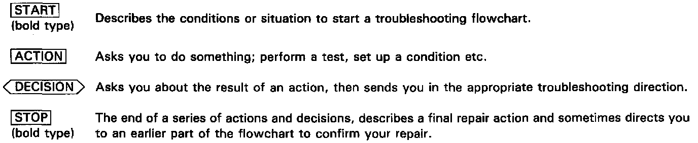
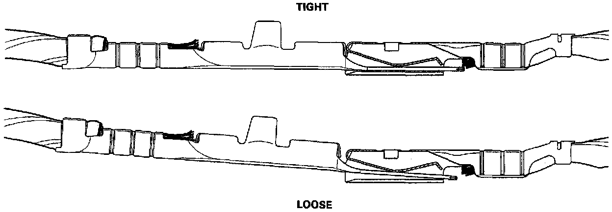

How to Read Flowcharts
Flowchart Symbols And Definitions:

A flowchart is designed to be used from start to final repair. It's like a map showing you the shortest distance. But beware: if you go off the "map" anywhere but a "stop" symbol, you can easily get lost. The image shows a list of symbols and their respective definitions. These symbols will show up in the flow charts.
Verifying Tight Electrical Connections:

NOTE:
^ The term "Intermittent Failure" is used in these charts. It simply means a system may have had a failure, but it checks out OK at this time. If the Malfunction Indicator Lamp (MIL) on the dash does not come on, check for poor connections or loose wires at all connectors related to the circuit that you are troubleshooting (see illustration).
^ Most of the troubleshooting flowcharts have you reset the Engine Control Module (ECM) and try to duplicate the diagnostic trouble code (DTC). If the problem is intermittent and you can't duplicate the code, do not continue through the flowchart. To do so will only result in confusion and, possibly, a needlessly replaced ECM.
^ "Open" and "Short" are common electrical terms. An open is a break in a wire or at a connection. A short is an accidental connection of a wire to ground or to another wire. In simple electronics, this usually means something won't work at all. In complex electronics (like ECM's), this can sometimes mean something works, but not the way it's supposed to.
^ If the electrical readings are not as specified when using the test harness, check the test harness connections before proceeding.